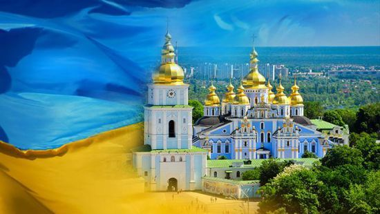

Моя країна - Барбадос

Назва - Барбадос
barbados «бородатий». Острів названий португальським дослідником Педро Кампосом «Os Barbados» через велику кількість виростали на ньому фігових дерев, оповитих схожими на бороди епіфітами.
З 1966 незалежна держава. Основа економіки - іноземний туризм (0,5 млн. Осіб на рік) і виробництво цукру. Частка в ВВП (1992,%): сільського господарства 5,2, промисловості 6,9.
Етимологія слова «Барбадос» достеменно не відома. Згідно з теорією, якої притримуються більшість дослідників, «Барбадос» походить від слів «Барба»